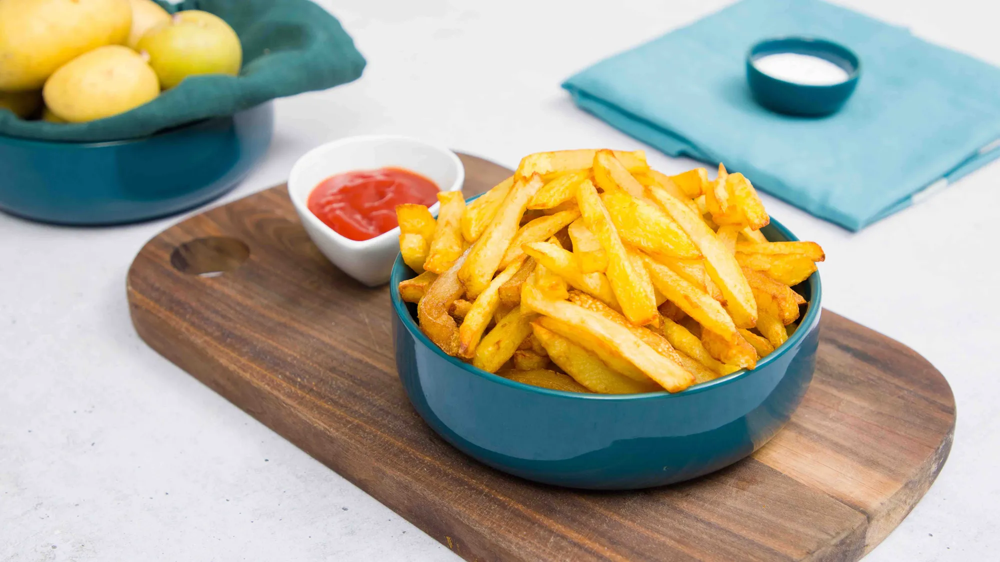

FRITTES

Description
Ingrédients
- huile de friture
- 1/4 de pomme de terre Bintje
- sel fin
- gros sel
Étapes
- Peler les pommes de terre et retirer les yeux. Les découper en bâtonnets d’environ 1 cm de diamètre. Les passer très rapidement sous l’eau (sans trop pour ne pas retirer tout l’amidon) puis les sécher parfaitement dans un torchon. Elles ne doivent pas présenter de traces d’humidité.
- Le secret de la cuisson des frites réside dans le fait de réaliser 2 cuissons successives à des températures différentes : 5 minutes à 140-150° pour les précuire puis 2-3 minutes à 180° pour les dorer.
- L’autre secret : bien séparer les 2 bains de friture en laissant le temps aux frites de « sécher » entre les 2 bains (10 minutes suffisent mais pour vous faciliter la vie, sachez que vous pouvez le faire jusqu’à 2 h à l’avance). Sortir le panier du bain de friture et secouer le panier pour bien égoutter l’huile.
- Une fois le 2ème bain réalisé, bien secouer le panier puis égoutter sur un papier absorbant. Saler tout de suite au sel fin puis juste avant de servir un peu de fleur de sel ou de gros sel.